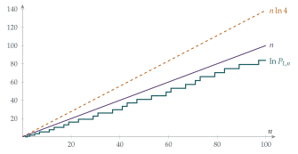

STEP III 2016, 문제 5
계속 읽기 전에 문제를 먼저 읽어 보자. 문제는 STEP Support Programme의 문제 데이터베이스에 있다: step.maths.org/questions/16-s3-q5
도입
1.1 절에서 소수(prime)가 무한히 많다는 것을 보았다. 그러나 “무한히 많다”는 것은 투박한 말이다. 소수는 분명히 점점 드물어진다. \(100\) 미만의 소수는 \(25\)개이지만, \(900\)과 \(1000\) 사이의 소수는 \(14\)개뿐이다. 그렇다면 소수는 얼마나 드물어지는가?
이 문제는 꽤 소박해 보이는 사실을 증명한다. \(n\) 이하의 모든 소수를 곱하면 그 값이 \(4^n\)보다 작다는 것이다. 그러나 이 순진해 보이는 부등식(inequality)은 “얼마나 드문가?”라는 물음에 답하는 첫 번째 진정한 발걸음이며, 1932년 젊은 에르되시(Paul Erdős)가 내놓은, 수학에서 가장 유명한 짧은 증명 가운데 하나의 핵심 보조정리(lemma)이다.
시작하기 전에
기호 \(P_{r,s}\)는 까다로워 보이지만 생각은 단순하다. 어떤 범위에 있는 소수들을 모두 곱하는 것이다. 예시를 꼭 이해하고 넘어가자. \(P_{3,7}\)은 \(3\)보다 크고 \(7\) 이하인 소수, 곧 \(5\)와 \(7\)을 사용하므로 그 값은 \(35\)이다.
문항 (iv)는 모든 \(n \geq 2\)에 대하여 어떤 명제를 증명하라고 한다. 문항 (iii)은 \(2m\) 이하의 모든 \(k\)에 대하여 그 명제가 성립한다고 가정한다. 이것은 어떤 종류의 귀납법(induction)인가?
이것은 강한 귀납법(strong induction)이다. \(n\)인 경우를 증명할 때, 바로 앞의 경우만이 아니라 그 이전의 모든 경우를 가정해도 된다. 이 점을 기억해 두자. 문제가 이런 식으로 구성된 까닭이 바로 이것이다.
차근차근 풀기
단계 1 이항계수는 너무 크지 않다
\((1+x)^{2m+1}\)의 이항전개(binomial expansion)에 \(x = 1\)을 대입하면 무엇을 얻는가?
다음을 얻는다. \[2^{2m+1} = \binom{2m+1}{0} + \binom{2m+1}{1} + \cdots + \binom{2m+1}{2m+1}.\] 모든 항이 양수이므로 각 항은 \(2^{2m+1}\)보다 작다. 하지만 이것으로는 충분하지 않다. 우리가 원하는 것은 그 절반인 \(2^{2m}\)이다.
파스칼의 삼각형(Pascal’s triangle)은 대칭이다. 합에서 \(\binom{2m+1}{m}\)과 같은 다른 항은 무엇인가?
대칭성에 의해 \(\binom{2m+1}{m} = \binom{2m+1}{m+1}\)이고, 이 둘은 합에서 서로 다른 두 항이다(\(m \neq m+1\)이므로). 따라서 \[2\binom{2m+1}{m} = \binom{2m+1}{m} + \binom{2m+1}{m+1} < 2^{2m+1},\] 이며, 합에는 \(\binom{2m+1}{0} = 1\)과 같은 다른 양수 항도 들어 있으므로 등호 없는 부등식이 성립한다. 양변을 \(2\)로 나누면 \(\binom{2m+1}{m} < 2^{2m}\)을 얻는다.■
단계 2 그 이항계수를 나누는 소수는 무엇인가?
이항계수(binomial coefficient)를 풀어 쓰면 다음과 같다. \[\binom{2m+1}{m} = \frac{(2m+1)!}{m!\,(m+1)!} = \frac{(m+2)(m+3)\cdots(2m+1)}{m!}.\]
\(p\)를 \(m + 1 < p \leq 2m+1\)인 소수라 하자. \(p\)는 분자를 나누는가? 분모를 나눌 수 있는가?
분자 \((m+2)(m+3)\cdots(2m+1)\)은 \(p\) 자신을 인수로 포함하므로 \(p\)는 분자를 나눈다. 분모 \(m!\)은 모두 \(p\)보다 작은 수들의 곱이다. \(p\)는 소수이므로, 어느 인수도 나누지 못하는 수들의 곱을 나눌 수 없다. 따라서 \(p\)는 분자는 나누지만 분모는 나누지 않으며, 그러므로 \(p\)는 이항계수 전체를 나눈다(이항계수가 정수라는 점을 기억하자).
이제 범위 안의 각 소수가 \(\binom{2m+1}{m}\)을 나눈다는 것을 알았다. 그렇다면 왜 그들의 곱 \(P_{m+1,2m+1}\)도 이 수를 나누는가? (주의: \(4\)와 \(6\)이 모두 어떤 수를 나눈다고 해서 \(24\)가 그 수를 나누는 것은 아니다.)
차이는 우리의 소수들이 서로 다른 소수(distinct primes)라는 데 있다. 서로 다른 소수 \(p_1, p_2, \ldots\)가 각각 \(N\)을 나누면 그들의 곱도 \(N\)을 나눈다. \(N = p_1 N_1\)이라 쓰자. 그러면 \(p_2\)는 \(p_1 N_1\)을 나누지만 \(p_1\)은 나누지 않으므로 \(N_1\)을 나눈다. 이와 같이 계속하면 된다. (여기서는 소수가 곱을 나누면 그 인수 가운데 하나를 나눈다는 사실을 사용했다. 이 사실은 잠시 경의를 표할 만하다. 1.7 절에서는 이와 비슷한 성질이 무너지는 세계를 보여 준다.)
따라서 \(P_{m+1,2m+1}\)은 \(\binom{2m+1}{m}\)을 나누고, 양수의 약수(divisor)는 그 수보다 크지 않으므로 \[P_{m+1,\,2m+1} \leq \binom{2m+1}{m} < 2^{2m}. \qed\]
단계 3 곱을 나누기
\(2m+1\) 이하의 모든 소수의 곱인 \(P_{1,2m+1}\)을 이미 알고 있는 곱들로 어떻게 만들 수 있는가?
\(2m+1\) 이하의 소수를 \(m+1\) 이하인 것과 \(m+1\)보다 큰 것으로 나누자. \[P_{1,2m+1} = P_{1,m+1} \times P_{m+1,2m+1}.\] 2단계에 의해 두 번째 인수는 \(2^{2m} = 4^m\)보다 작다. 첫 번째 인수에 대해서는, \(2\)부터 \(2m\)까지의 모든 \(k\)에 대하여 \(P_{1,k} < 4^k\)라고 가정해도 되며, \(k = m+1\)은 이 범위 안에 있다(\(m \geq 1\)이면 \(2 \leq m+1 \leq 2m\)이므로). 따라서 \[P_{1,2m+1} < 4^{m+1} \times 4^{m} = 4^{2m+1}. \qed\] 바로 여기서 강한 귀납법이 제 몫을 한다. \(2m+1\)을 다루기 위해 필요했던 것은 바로 앞의 경우가 아니라, 대략 그 절반 크기인 \(m+1\)인 경우였다.
단계 4 모든 \(n\)
문항 (iii)은 홀수를 다룬다. 짝수 \(n = 2m+2\)이면 어떻게 되는가? 이 수는 소수인가?
처음 경우를 확인하자. \(P_{1,2} = 2 < 16\)이고 \(P_{1,3} = 6 < 64\)이다. 이제 \(n \geq 4\)일 때, \(2\)부터 \(n-1\)까지의 모든 \(k\)에 대하여 \(P_{1,k} < 4^k\)라고 가정하자.
\(n\)이 짝수이면, \(n\)은 소수가 아니다(\(2\)보다 크므로). 따라서 \(n\) 이하의 소수는 \(n-1\) 이하의 소수와 같다. 그러므로 \(P_{1,n} = P_{1,n-1} < 4^{n-1} < 4^n\)이다.
\(n\)이 홀수이면, \(m \geq 2\)인 \(m\)에 대하여 \(n = 2m+1\)로 쓰자. 그러면 문항 (iii)에 의해 곧바로 \(P_{1,n} < 4^n\)이다.
강한 귀납법에 의해, 모든 \(n \geq 2\)에 대하여 \(P_{1,n} < 4^n\)이다.■
돌아보기
이항계수는 수론적 정보를 담고 있다. \(\binom{2m+1}{m}\)은 작으면서(\(4^m\)보다 작다) 많은 소수로 나누어떨어질 수밖에 없는 하나의 수이다. 많은 소수를 작은 수 안에 밀어 넣으면, 그런 소수가 너무 많을 수는 없다는 것을 알 수 있다.
문제가 스스로를 절반으로 줄일 때는 강한 귀납법이 자연스러운 도구이다. \(2m+1\)인 경우는 \(m+1\)인 경우에 의존했다.
작은 경우는 따로 확인해야 한다. 귀납법은 \(n \geq 4\)가 되어서야 작동하므로, \(n = 2\)와 \(3\)은 직접 처리해야 했다.
숨은 수학
결과에 로그(logarithm)를 취하면 \(\ln P_{1,n} < n \ln 4\), 곧 \[\sum_{p \leq n} \ln p < (\ln 4)\, n \approx 1.39\,n .\] 1850년대에 체비쇼프(Pafnuty Chebyshev)는 바로 이런 종류의 상계와 하계를 증명하여, \(\sum_{p \leq n} \ln p\)가 \(n\)에 비례하여 증가함을 보였다. 가우스(Gauss)는 약 15세 무렵 이미 표를 보고 \(n\) 이하의 소수의 개수가 대략 \(n / \ln n\)이라고 추측했다. 이것이 소수 정리(Prime Number Theorem)가 되었으며, 1896년 아다마르(Jacques Hadamard)와 드 라 발레 푸생(Charles de la Vallée Poussin)이 복소해석학(complex analysis)을 이용하여 마침내 증명하였다. 로그 형태로 쓰면 소수 정리는 \[\sum_{p \leq n} \ln p \sim n,\] 을 말하며, 따라서 \(n\) 이하의 소수의 곱은 대략 \(e^n\)이다. 우리가 얻은 상계 \(4^n\)은 전혀 동떨어진 값이 아니다. 그림 1.2.1에 세 가지를 모두 나타내었다.

베르트랑 공준
1845년 베르트랑(Joseph Bertrand)은 모든 \(n \geq 1\)에 대하여 \(n\)과 \(2n\) 사이에 항상 소수가 존재한다고 추측했다. 체비쇼프는 1852년에 이를 증명했다. 80년 뒤, 약관 19세의 에르되시가 아름다운 초등적 증명을 찾아냈다. 그 핵심 재료는 이 문제의 보조정리와, 가운데 이항계수 \(\binom{2n}{n}\)을 나누는 소수가 무엇인지에 대한 세심한 분석이다. Martin Aigner와 Günter Ziegler는 수학에서 가장 우아한 증명들을 모은 책 Proofs from THE BOOK의 제2장으로 이 증명을 골랐다.
이 다음은
소수의 정확한 분포는 리만 제타 함수(Riemann zeta function) \[\zeta(s) = 1 + \frac{1}{2^s} + \frac{1}{3^s} + \cdots,\] 의 영점에 의해 결정된다. 이 함수는 2.4 절에서 훨씬 소박한 모습으로 만나게 되는데, 거기서 \(\zeta(2) = \pi^2/6\)이다. 그 영점들이 정확히 어디에 있는지 예측하는 리만 가설(Riemann Hypothesis)이 참이라면, 소수 정리의 오차를 가능한 한 가장 정밀하게 잡아낼 수 있다. 리만 가설은 아마도 수학에서 가장 유명한 미해결 문제이며, 밀레니엄 문제(Millennium Prize Problems) 가운데 하나이다.
사고 기술
\(n\)인 경우가 \(n-1\)보다 훨씬 작은 경우에 의존한다면, 이전의 모든 경우를 한꺼번에 가정하라.
여기에 담긴 또 하나의 아이디어는 더 미묘하며 정수론(number theory)의 특징을 잘 보여 준다. 어떤 범위의 모든 소수에 대해 무언가를 보이려면, 그 소수들이 모두 나누어야만 하면서 동시에 너무 크지 않다는 것도 보일 수 있는 하나의 대상(여기서는 이항계수)을 찾아라.
더 도전하기
수를 느껴 보기. \(n = 10, 20, 30\)에 대하여 \(P_{1,n}\)을 계산하고, \(4^n\) 및 \(e^n\)과 비교하여라. (여기서는 계산기를 써도 좋다.)
가운데 이항계수. \(\binom{2m}{m}\)이 \((1+1)^{2m}\)의 전개에 나오는 \(2m+1\)개의 항 가운데 가장 큼을 보이고, 이로부터 \(\binom{2m}{m} \geq \dfrac{4^m}{2m+1}\)임을 유도하여라.
소수는 너무 많지 않다. \(\pi(n)\)을 \(n\) 이하의 소수의 개수라 하자. \(\sqrt n\)과 \(n\) 사이의 모든 소수는 \(\sqrt n\)보다 크고, 그들의 곱은 많아야 \(P_{1,n} < 4^n\)이다. 이로부터 \[\pi(n) - \pi(\sqrt n) < \frac{2\ln 4}{\ln n}\, n ,\] 임을 유도하고, 따라서 \(\pi(n) < 2.8\, n/\ln n + \sqrt n\)임을 보여라. 이를 소수 정리의 \(\pi(n) \approx n / \ln n\)과 비교하여라.
베르트랑 확인하기. \(n = 1, 2, \ldots, 50\) 각각에 대하여 \(n\)과 \(2n\) 사이의 소수를 찾아 베르트랑 공준(Bertrand’s postulate)을 확인하여라. 각 소수가 바로 앞 소수의 두 배보다 작은 짧은 소수 목록을 이용하여 효율적으로 할 수 있는가?
더 읽을거리
Aigner & Ziegler, Proofs from THE BOOK, 제2장, “Bertrand’s postulate”(베르트랑 공준).
Marcus du Sautoy, The Music of the Primes (Fourth Estate). 소수 정리와 리만 가설의 역사를 다룬 대중서이다.
G. J. O. Jameson, The Prime Number Theorem (Cambridge University Press). 엄밀하면서도 친절하며 학부생을 위해 쓰였다. 앞쪽 장들은 A 레벨(A level, 영국의 대학 입학 자격 시험) 수준의 미적분만 있으면 읽을 수 있다.